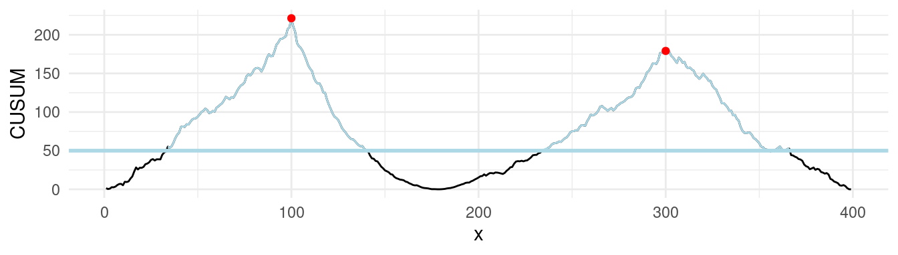
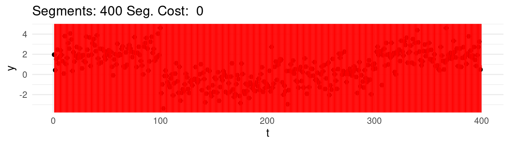
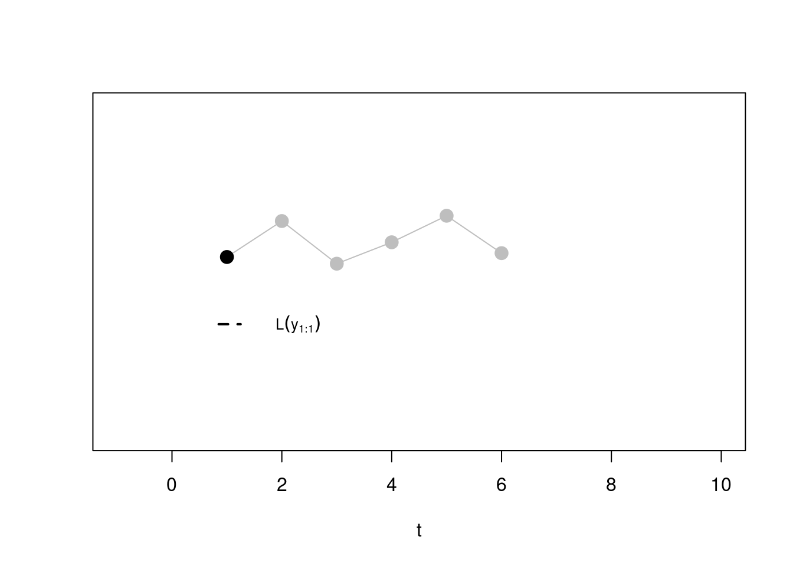
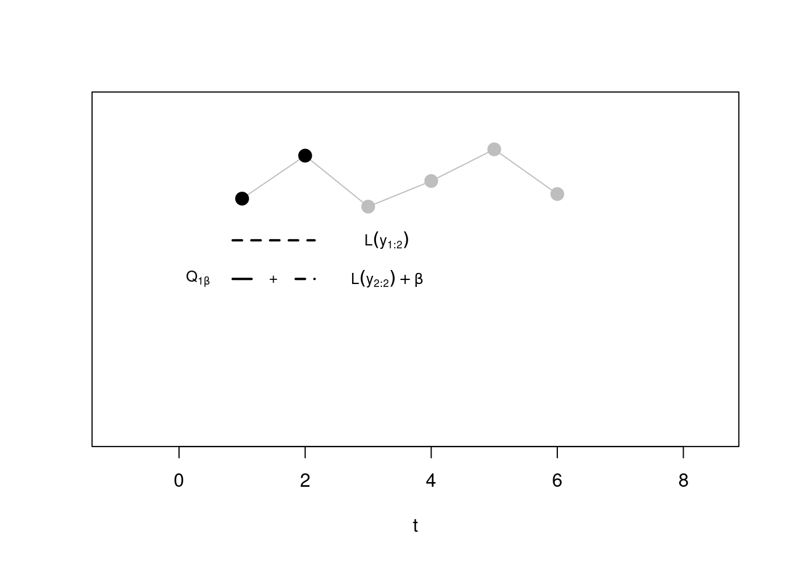
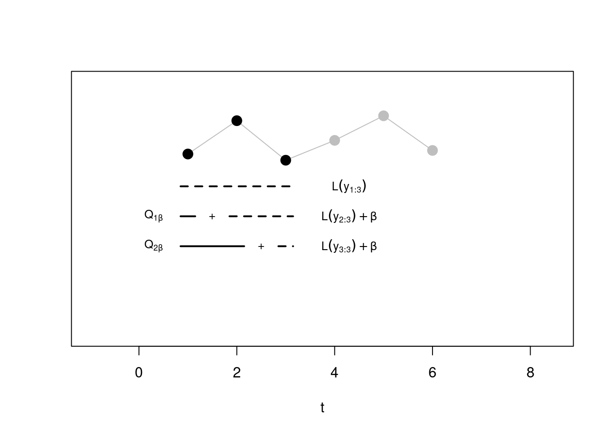

3 Multiple changepoints
3.1 Introduction
In real-world data, it is common to encounter situations where more than one change occurs. When applying the CUSUM statistic in such cases, where there are multiple changes, the question arises: how does CUSUM behave, and how can we detect these multiple changes effectively?
3.1.1 Real Example: Genomic Data and Neuroblastoma
To motivate this discussion, we return to the example from week 1: detecting active genomic regions using ChIP-seq data. Our goal here is to identify copy number variations (CNVs)—structural changes in the genome where DNA sections are duplicated or deleted. These variations can impact gene expression and are linked to diseases like cancer, including neuroblastoma. The dataset we’ll examine consists of logratios of genomic probe intensities, which help us detect changes in the underlying DNA structure.
Statistically our objective is to segment this logratio sequence into regions with different means, corresponding to different genomic states:
As seen from the plot, the data is noisy, but there are visible shifts in the logratio values, suggesting multiple changes in the underlying copy number. By the end of this chapter, we will segment this sequence!
3.1.2 Towards multiple changes
Under this framework, the observed sequence \(y_t\) can be modeled as a piecewise constant signal with changes in the mean occurring at each changepoint \(\tau_k\). A plausible model for the change-in-mean signal is given by
\[ y_t = \mu_k + \epsilon_t, \quad \text{for} \ \tau_k \leq t < \tau_{k+1}, \ k = 0, 1, \dots, K, \]
where \(\mu_k\) is the mean of the \(k\)-th segment, and \(\epsilon_t \sim \mathcal{N}(0, \sigma^2)\) are independent Gaussian noise terms with mean 0 and (known) variance \(\sigma^2\).
As a starting example, we can generate a sequence with 4 segments, with \(\tau_1 = 50, \tau_2 = 100, \tau_3 = 150\) and means \(\mu_1 = 2, \mu_2 = 0, \mu_3 = -1\) and \(\mu_4 = 2\). Running the CUSUM statistic in this scenario with multiple changes, leads to the following \(C_\tau^2\) trace:
From this, we notice that our test still has power to detect some of the changes, but the estimate that we get, is initially wrong. \(\Delta \mu = |\mu_1 - \mu_2|\). Is power lost when there is more then one change in our test?
Well, to answer this question, we can compare the values of the CUSUM statistic ran on the whole dataset (as above), with the values of the CUSUM, ran on a subset containing only one change:
Warning: Removed 199 rows containing missing values or values outside the scale range
(`geom_line()`).
We can see that max of the old cusum (the line in grey) is much lower than the one where we isolate the sequence on one single change! So there is an effective loss of power in this scenario in analyzing all changes together, as some changes are masking the effects of others…
This gives us motivation to move towards some methodology that tries to estimate all changes locations jointly, rather then one at a time!
3.1.3 The cost of a segmentation
Well, so far we only worked with one scheme that tried to split a sequence in a hald
But how can we work in case we have more than one change? Well, we need to introduce the cost of a segment.
If we assume the data is independent and identically distributed within each segment, for segment parameter \(\theta\), then this cost can be obtained through:
\[ \mathcal{L}(y_{s+1:t}) = \min_\theta \sum_{i = s + 1}^{t} - \log(f(y_i, \theta)) \]
with \(f(y, \theta)\) being the likelihood for data point \(y\) if the segment parameter is \(\theta\). Now, for example, in the gaussian case this cost is given by:
\[ \mathcal{L}(y_{s:t}) = \frac{1}{2\sigma^2} \sum_{i = s}^{t} \left ( y_i - \bar{y}_{s:t} \right)^2 \]
The cost for the full segmentation will be given by the sum across all segments:
\[ \sum_{k = 0}^K \mathcal{L}(y_{\tau_k+1:\tau_{k+1}}) \]
Interestingly, the cost of a full segmentation is closely related to the LR test. Consider, a single Gaussian change-in-mean at time \(\tau\), splitting the data into two segments: \(y_{1:\tau}\) and \(y_{\tau+1:n}\). The cost of this segmentation is:
\[ \mathcal{L}(y_{1:\tau}) + \mathcal{L}(y_{\tau+1:n}) = \frac{1}{\sigma^2} \left[\sum_{i=1}^{\tau} (y_i - \bar{y}_{1:\tau})^2 + \sum_{i=\tau+1}^{n} (y_i - \bar{y}_{(\tau+1):n})^2 \right] \]
Which is essentially the same LR test as we saw last week, without the null component. Specifically, for one change, minimizing the segmentation cost over all possible changepoints locations \(\tau\) is equivalent to maximizing the CUSUM statistic.
3.1.4 The “best” segmentation
We now have a way of evaluating how “good” a segmentation is, so it’s only natural to ask the question: what would be the best one?
Well, one way would be to, say, finding the the best set of \(\tau = \tau_0, \dots, \tau_{K+1}\) changepoints that minimise the cost:
\[ \min_{\substack{K \in \mathbb{N}\\ \tau_1, \dots, \tau_K}} \sum_{k = 0}^K \mathcal{L}(y_{\tau_k+1:\tau_{k+1}}). \tag{3.1}\]
Which one would this be? Say that for instance we range the \(K = 1, \dots, n\), and at each step we find the best possible segmentation. Graphically, we would be observing the following:


Well, arguably we would like to stop at 4, which we know is the real number of segments, but the cost keep going down…
And finally:
Well, it turns out, that according to the minimization above, the optimal segmentation across all would be the one that puts each point into its own segment!
Well, there are different solutions to this problem. The first one we will see, is a divide-and-conquer greedy approach, called Binary Segmentation, and the second one will aim a generating a different optimization to the one below that will find the optimal segmentation up to a constant to avoid over-fitting!
3.2 Binary Segmentation
Binary Segmentation (BS) is a procedure from and . Binary segmentation works like this:
- Start with a test for a change \(\tau\) that splits a sequence into two segments and to check if the cost over those two segments, plus a penalty \(\beta \in \mathbb{R}\), is smaller then the cost computed on the whole sequence: \[ \mathcal{L}(y_{1:\tau}) + \mathcal{L}(y_{\tau+1:n}) + \beta < \mathcal{L}(y_{1:n}) \tag{3.2}\]
where the segment cost \(\mathcal{L}(\cdot)\), is as in Equation eq-segment_cost.
If the condition in Equation eq-bin_seg_condition is true for at least one \(\tau \in 1, \dots, n\), then the \(\tau\) that minimizes \(\mathcal{L}(y_{1:\tau}) + \mathcal{L}(y_{\tau+1:n})\) is picked as a first changepoint and the test is then performed on the two newly generated splits. This step is repeated until no further changepoints are detected on all resulting segments.
If there are no more resulting valid splits, then the procedure ends.
Some of you might have noted how the condition in Equation eq-bin_seg_condition is closely related to the LR test in Equation eq-lr-test. In fact, rearranging equation above, gives us:
\[ - \mathcal{L}(y_{1:n}) + \mathcal{L}(y_{1:\tau}) + \mathcal{L}(y_{\tau+1:n}) = - \frac{LR_\tau}{2} < -\beta. \]
The \(-\beta\) acts exactly as the constant \(c\) for declaring a change, and it adds a natural stopping condition, solving the issue of overfitting that we mentioned in the previous section! Binary Segmentation, in fact, does nothing more then iteratively running a LR test, until no changes are found anymore!
This gives us a strategy to essentially apply a test that is locally optimal for one change, such as the Likelihood Ratio test, to solve a multiple changepoint segmentation. For this reason, BS is often employed to extend single changepoint procedures to multiple changes procedures, and hence it is one of the most prominent methods in the literature.
3.2.1 Binary Segmentation in action
Having introduced the main idea, we show now how binary segmentation works in action with an example above. Say that we set a \(\beta = 2 \log(400) =\) 11.98.
Step 1: We start by computing the cost as in Equation eq-bin_seg_condition, and for those that are less then \(\beta\), we pick the smallest. This will be our first changepoint estimate, and the first point of split.
In the plots below, the blue horizontal line is the mean signal estimated for a given split, while in the cusum the pink will represent the values of the LR below the threshold \(\beta\), and red vertical line will show the min of the test statistics. When the cost is below the beta line, this will be our changepoint estimate.
In our case, we can see that the min of our cost has been achieved for \(\hat\tau=100\), and since this is below the threshold, it’s our first estimated changepoint!

Step 2:
From the first step, we have to check now two splits:
The first left split, 1-LEFT in the plot below, covers data \(y_{1:100}\). We can see that from here, the min of our statistic is below the threshold, therefore we won’t declare any further change in this subset.
The first right split, 1-RIGHT covers data \(y_{101:400}\). We can see that here, the min of the statistics, is below the threshold, and therefore we identify a second change at \(\hat\tau = 297\). This is not exactly 300, so we don’t have a perfect estimate. Despite this is not ideal, this is the best point we have found and therefore we have to continue!
Step 3:
In step 3, we have to check again two splits splits:
The second left split, 2-LEFT in the plot below, covers data \(y_{101:297}\). Now, it’s in this split that the statistics goes below the threshold! The third estimated change is at \(\hat\tau = 203\), again slightly off the real one at 200. We continue investigating this split…
The second right split, 2-RIGHT covers data \(y_{298:400}\). In this last split, the min is not over the threshold, therefore we stop the search.
Step 4:
In step 4, we check:
The third left split, 3-LEFT in the plot below, covers data \(y_{101:203}\). The minimum, in here is not over the threshold.
The third right split, 3-RIGHT covers data \(y_{204:298}\). Similarly, the minimum is not over the treshold.
The algorithm therefore terminates!
With this graphical description in mind, we formally describe the Binary Segmentation algorithm as a recursive procedure, where the first iteration would be simply given by \(\text{BinSeg}(y_{1:n}, \beta)\).
\(\text{BinSeg}(y_{s:t}, \beta)\)
INPUT: Subseries \(y_{s:t} = \{y_s, \dots, y_t\}\) of length \(t - s + 1\), penalty \(\beta\)
OUTPUT: Set of detected changepoints \(cp\)
IF \(t - s \leq 1\)
RETURN \(\{\}\) // No changepoint in segments of length 1 or less
COMPUTE
\(\mathcal{Q} \leftarrow \underset{\tau \in \{s, \dots, t\}}{\min} \left[ \mathcal{L}(y_{s:\tau}) + \mathcal{L}(y_{\tau+1:t}) - \mathcal{L}(y_{s:t}) + \beta \right]\)
IF \(\mathcal{Q} < 0\)
\(\hat{\tau} \leftarrow \underset{\tau \in \{s, \dots, t\}}{\text{arg}\min} \left[ \mathcal{L}(y_{s:\tau}) + \mathcal{L}(y_{\tau+1:t}) - \mathcal{L}(y_{s:t}) \right]\)
\(cp \leftarrow \{ \hat{\tau}, \text{BinSeg}(y_{s:\hat{\tau}}, \beta), \text{BinSeg}(y_{\hat{\tau}+1:t}, \beta) + \hat\tau \}\)
RETURN \(cp\)
RETURN \(\{\}\) // No changepoint if \(-LR/2\) is above penalty \(- \beta\)
OUTPUT: Set of detected changepoints \(cp\)
IF \(t - s \leq 1\)
RETURN \(\{\}\) // No changepoint in segments of length 1 or less
COMPUTE
\(\mathcal{Q} \leftarrow \underset{\tau \in \{s, \dots, t\}}{\min} \left[ \mathcal{L}(y_{s:\tau}) + \mathcal{L}(y_{\tau+1:t}) - \mathcal{L}(y_{s:t}) + \beta \right]\)
IF \(\mathcal{Q} < 0\)
\(\hat{\tau} \leftarrow \underset{\tau \in \{s, \dots, t\}}{\text{arg}\min} \left[ \mathcal{L}(y_{s:\tau}) + \mathcal{L}(y_{\tau+1:t}) - \mathcal{L}(y_{s:t}) \right]\)
\(cp \leftarrow \{ \hat{\tau}, \text{BinSeg}(y_{s:\hat{\tau}}, \beta), \text{BinSeg}(y_{\hat{\tau}+1:t}, \beta) + \hat\tau \}\)
RETURN \(cp\)
RETURN \(\{\}\) // No changepoint if \(-LR/2\) is above penalty \(- \beta\)
3.3 Optimal Partitioning
Another solution to avoid the over-fitting problem of Equation eq-segment_cost lies in introducing a penalty term that discourages too many changepoints, avoiding overfitting. This is known as the penalised approach.
To achieve this, we want to minimize the following cost function:
\[ Q_{n, \beta} = \min_{K \in \mathbb{N}} \left[ \min_{\substack{\\ \tau_1, \dots, \tau_K}} \sum_{k = 0}^K \mathcal{L}(y_{\tau_k+1:\tau_{k+1}}) + \beta K \right], \tag{3.3}\]
where \(Q_{n, \beta}\) represents the optimal cost for segmenting the data up to time \(n\) with a penalty $ $ that increases with each additional changepoint \(K\). With the \(\beta\) term, for every new changepoint added, the cost of the full segmentation increases, discouraging therefore models with too many changepoints.
Unlike Binary Segmentation, which works iteratively and makes local decisions about potential changepoints, and as we have seen it is prone to errors, solving \(Q_{n, \beta}\) ensures that the segmentation is globally optimal, as in the location of the changes are the best possible to minimise our cost.
Now, directly solving this problem using a brute-force search is computationally prohibitive, as it would require checking every possible combination of changepoints across the sequence: the number of possible segmentations grows exponentially as \(n\) increases…
Fortunately, this problem can be solved efficiently using a sequential, dynamic programming algorithm: Optimal Partitioning (OP), from Jackson et al. (2005). OP solves Equation eq-pen-cost exactly through the following recursion.
We start with \(\mathcal{Q}_{0, \beta} = -\beta\), and then, for each \(t = 1, \dots, n\), we compute:
\[ \mathcal{Q}_{t, \beta} = \min_{0 \leq \tau < t} \left[ \mathcal{Q}_{\tau, \beta} + \mathcal{L}(y_{\tau + 1:t}) + \beta \right]. \tag{3.4}\]
Here, \(\mathcal{Q}_{t, \beta}\) represents the optimal cost of segmenting the data up to time \(t\). The algorithm builds this solution sequentially by considering each possible segmentation \(\mathcal{Q}_{0, \beta},\ \cdots, \mathcal{Q}_{t-2, \beta},\ \mathcal{Q}_{t-1, \beta}\) before the current time \(t\), plus the segment cost up to current time \(t\), \(\mathcal{L}(y_{\tau + 1:t})\).
3.3.1 Optimal partitinioning in action
This recursion can be quite hard to digest, and is, as usual, best described graphically.
Step 1 Say we are at \(t = 1\). In this case, according to equation above, the optimal cost up to time one will be given by (remember that the \(\beta\) cancels out with \(Q_{0, \beta}\)!):
\[ \mathcal{Q}_{1, \beta} = \left[ -\beta + \mathcal{L}(y_{1:1}) + \beta \right] = \mathcal{L}(y_{1:1}) \]

Step 2. Now, at the second step, we have to minimise between two segmentations:
- One with the whole sequence in a second segment alone (again, \(\beta\) cancels out with \(Q_{0, \beta} = -\beta\)), and this will be given by \(\mathcal{L}(y_{1:2})\) (dotted line)
- One with the optimal segmentation from step 1 \(\mathcal{Q}_{1, \beta}\) (whose cost considered only the first point in its own segment!), to which we have to sum the cost relative to a second segment \(\mathcal{L}(y_{2:2})\) that puts the second point alone, and the penalty \(\beta\) as we have added a new segment!
We minimise across the two, and this gives us \(Q_{2, \beta}\).

Step 3: Similarly, at \(t = 3\) we have now three segmentations to choose from:
The one that puts the first three observations in the same segment, whose cost will be given simply by \(\mathcal{L}(y_{1:2})\),
The one considering the optimal segmentation from time 1, plus the cost of adding an extra segment with observation 2 and 3 together
Finally the optimal from segmentation 2, \(\mathcal{Q}_{2, \beta}\), plus the segment cost of fitting an extra segment with point 3 alone. Note that \(\mathcal{Q}_{2, \beta}\) will come from the step before: if we would have been beneficial to add a change, at the previous step, this information is carried over!
Again, we pick the minimum across these three to get \(\mathcal{Q}_{3, \beta}\), and proceed.

Step \(n\) Until the last step! Which would look something like this:

A formal description of the algorithm can be found below:
INPUT: Time series \(y = (y_1, ..., y_n)\), penalty \(\beta\)
OUTPUT: Optimal changepoint vector \(cp_n\)
Initialize \(\mathcal{Q}_0 \leftarrow -\beta\)
Initialize \(cp_0 \leftarrow \{\}\)
FOR \(t = 1, \dots, n\)
\(\mathcal{Q}_t \leftarrow \min_{0 \leq \tau < t} \left[ \mathcal{Q}_{\tau} + \mathcal{L}(y_{\tau + 1:t}) + \beta \right]\)
\(\hat\tau \leftarrow \text{arg}\min_{0 \leq \tau < t} \left[ \mathcal{Q}_{\tau} + \mathcal{L}(y_{\tau + 1:t}) + \beta \right]\)
\(cp_t \leftarrow (cp_{\hat\tau}, \hat\tau)\) // Append the changepoint to the list at the last optimal point
RETURN \(cp_n\)
OUTPUT: Optimal changepoint vector \(cp_n\)
Initialize \(\mathcal{Q}_0 \leftarrow -\beta\)
Initialize \(cp_0 \leftarrow \{\}\)
FOR \(t = 1, \dots, n\)
\(\mathcal{Q}_t \leftarrow \min_{0 \leq \tau < t} \left[ \mathcal{Q}_{\tau} + \mathcal{L}(y_{\tau + 1:t}) + \beta \right]\)
\(\hat\tau \leftarrow \text{arg}\min_{0 \leq \tau < t} \left[ \mathcal{Q}_{\tau} + \mathcal{L}(y_{\tau + 1:t}) + \beta \right]\)
\(cp_t \leftarrow (cp_{\hat\tau}, \hat\tau)\) // Append the changepoint to the list at the last optimal point
RETURN \(cp_n\)
Running the Optimal Partitioning method on our example scenario, with the same penalty \(\beta = 2 \log(400) =\) 11.98 as above, gives changepoint locations \(\tau_{1:4} = \{100, 203, 301\}\).
Loading required package: zoo
Attaching package: 'zoo'The following objects are masked from 'package:base':
as.Date, as.Date.numericSuccessfully loaded changepoint package version 2.2.4
See NEWS for details of changes.So we can see how on this dataset in particular, OP performs slightly better then Binary Segmentation on the last change, getting closer to the real changepoint of 300!
3.3.2 Neuroblastoma example
Returning to the original example at the start of the module, the neuroblastoma dataset, we run both Binary Segmentation, and Optimal Partitioning.
We report results in the plot below (blue for BS, green for OP). In this case, the algorithms return the same four changepoints:

Some of you might come up with two (very interesting) questions that hopefully we will answer next week…
If the methods perform roughly the same, which one do I choose?
Why is the data on a different scale then that presented at the start of the chapter?
3.4 Exercises
3.4.1 Workshop 3
- For the vector \(y_{1:4} = (0.5, -0.1, 12.1, 12.4)\), and a penalty \(\beta = 5\) calculate, pen on paper (and calculator), all the Binary Segmentation, and Optimal Partitioning steps. TIP: To speed up computations, you want to pre-compute all segment costs \(\mathcal{L}(y_{l:u})\). I have pre-computed some of these costs in the table below:
\[ \begin{array}{c|cccc} l \backslash u & 1 & 2 & 3 & 4 \\ \hline 1 & \mathcal{L}(y_{1:1}) & 0.18 & 94.59 & 145.43 \\ 2 & & 0.00 & \mathcal{L}(y_{2:3}) & 101.73 \\ 3 & & & 0.00 & \mathcal{L}(y_{3:4}) \\ 4 & & & & 0.00 \\ \end{array} \]
3.4.2 Lab 3
Code the Optimal Partitioning algorithm for the Gaussian change-in-mean case.
Tips:Again, you can pre-compute all the possible \(\mathcal{L}(y_{l:u})\), for \(u \geq l\) to save computational time.
Be very careful with indexing… R starts indexing at 1, however, in the pseudocode, you have one element that starts at 0…
Install the
changepointpackage. The example signal of Section 3.4, with the same penalty value of \(\beta = 2 * log(n)\), compare your implementation of OP, Binary Segmentation, and PELT. You will learn how to do so in the documentation, running?cpt_mean. You should make 300 replicates each of your experiment, and compare:The absolute error loss from the mean signal, e.g. \(||\mu_{1:n} - \hat{\mu}_{1:n}||^2_2\)
The absolute error in the number of changepoints reconstructed, e.g. \(|K - \hat{K}|\). What do we observe?
The runtime for one sequence of PELT agains Binary Segmentation. Evaluate the runtime with package
microbenchmark.
Jackson, Brad, Jeffrey Scargle, D. Barnes, S. Arabhi, A. Alt, P. Gioumousis, E. Gwin, P. Sangtrakulcharoen, L. Tan, and Tun Tsai. 2005. “An Algorithm for Optimal Partitioning of Data on an Interval.” Signal Processing Letters, IEEE 12 (March): 105–8. https://doi.org/10.1109/LSP.2001.838216.